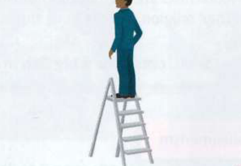
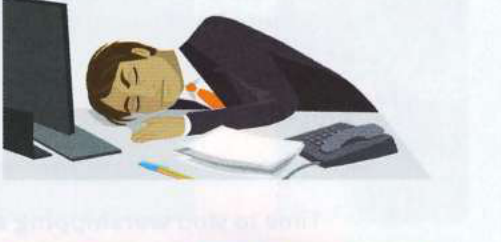
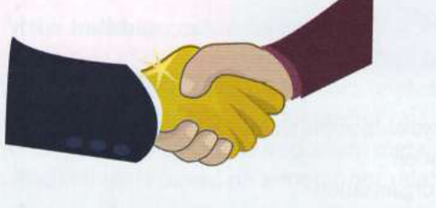
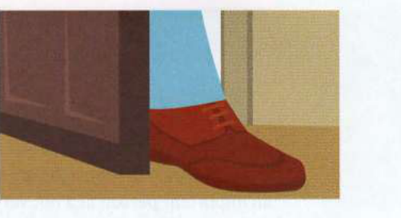

Bài tập
29.1
Những bức tranh này gợi cho bạn liên tưởng đến những thành ngữ nào?
1

3

2

4

29.2
Hoàn thành mỗi câu sau với một thành ngữ ở bài 29.1.
1
She founded the company, but she's not very active in it now. She's just a ................................................................................................................. (Cô ấy sáng lập công ty, nhưng hiện tại không hoạt động nhiều ở đó. Cô ấy chỉ là một đối tác góp vốn không điều hành [viết lại bằng: sleeping partner (đối tác góp vốn không điều hành)].)
2
He desperately wanted to work in the film industry, so he got a job carrying camera equipment to get ................................................................................................................. (Anh ấy vô cùng muốn làm việc trong ngành điện ảnh, vì vậy anh ấy đã nhận một công việc mang vác thiết bị máy quay để tạo bước đệm ban đầu [viết lại bằng: a foot in the door (bước chân qua cửa / tạo bước đệm ban đầu)].)
3
When he retired, the company gave him a ................................................................................................... (Khi ông ấy nghỉ hưu, công ty đã trao cho ông ấy một khoản trợ cấp thôi việc hậu hĩnh [viết lại bằng: golden handshake (khoản tiền trợ cấp thôi việc hậu hĩnh)].)
4
It took him years to become chief executive, but he's ................................................................................................ now. (Anh ấy phải mất nhiều năm mới trở thành giám đốc điều hành, nhưng hiện tại anh ấy đang ở đỉnh cao sự nghiệp [viết lại bằng: at the top of the ladder / top of the ladder (đỉnh cao sự nghiệp / ở vị trí cao nhất)].)
29.3
Những câu sau đây có hợp lý không? Giải thích tại sao có hoặc tại sao không.
1
Cô ấy có một track record (thành tích làm việc) tốt, vì vậy họ đã sa thải cô ấy.
2
Đó là một cushy number (công việc nhàn hạ), vì vậy anh ấy thực sự đã phải làm việc rất chăm chỉ.
3
Tôi đã slogged my guts out (làm việc kiệt sức) và mệt lử.
4
Cô ấy đã chuyển việc và nhận được một khoản golden hello (tiền thưởng gia nhập) từ người sử dụng lao động mới.
5
Cửa hàng đang doing a roaring trade (buôn bán đắt như tôm tươi), vì vậy họ phải đóng cửa.
6
Porterfax Ltd đã went belly up (phá sản) và tuyển thêm 30 nhân viên mới.
7
Opticarm đã cornered the market (độc chiếm thị trường) về máy ảnh kỹ thuật số và phải đối mặt với sự cạnh tranh gay gắt.
8
Anh ấy đã chuyển về quê sống vì mệt mỏi với the rat race (vòng xoáy tranh đua).
29.4
Viết lại phần gạch chân của mỗi câu sau sử dụng từ trong ngoặc.
1
Our new online business is doing extremely well. [GUNS] (Doanh nghiệp trực tuyến mới của chúng tôi đang hoạt động cực kỳ tốt. [viết lại bằng: going great guns (phát triển cực kỳ tốt đẹp)])
2
Some airlines are in danger of collapsing financially. [WALL] (Một số hãng hàng không đang có nguy cơ sụp đổ về tài chính. [viết lại bằng: going to the wall (bị đẩy vào đường cùng / phá sản)])
3
That new farmers' market seems to be selling a lot of goods. [ROAR] (Khu chợ nông sản mới kia dường như bán được rất nhiều hàng hóa. [viết lại bằng: doing a roaring trade (buôn bán đắt như tôm tươi)])
4
Mr Olsen decided to close his business and retire to the coast. [SHOP] (Ông Olsen quyết định đóng cửa hoạt động kinh doanh và nghỉ hưu ở vùng biển. [viết lại bằng: shut up shop (đóng cửa tiệm / ngừng kinh doanh)])
5
Another insurance company was forced to close down last week. [BUST] (Một công ty bảo hiểm khác đã bị buộc phải đóng cửa vào tuần trước. [viết lại bằng: went bust (vỡ nợ / sụp tiệm)])
6
She realised she had hit a point where she could go no higher at work. [GLASS] (Cô ấy nhận ra mình đã chạm đến giới hạn không thể thăng tiến cao hơn nữa trong công việc. [viết lại bằng: hit a glass ceiling (chạm phải rào cản vô hình)])